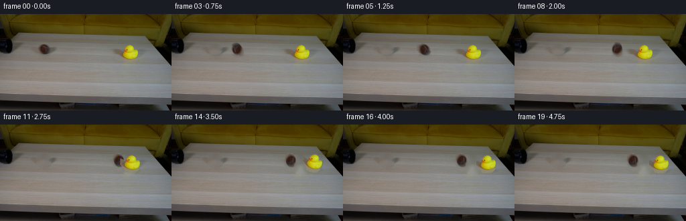
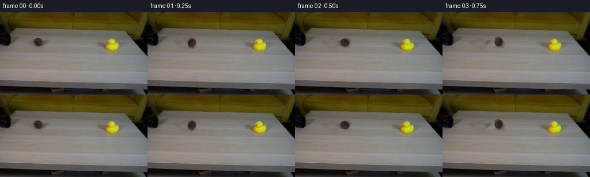

CODING AGENTS AS PIXEL WORLD MODELS
traex/GPT-5.6-Sol · 0008
点击播放 · 原生 RGB 像素
逐轮保存的候选
回放视频、检查图与代码变化。
每份候选均可单独播放。实际图片检查记录在下方工具轨迹中。
候选 01播放与检查图
点击播放 · 原生 RGB 像素

展开代码变化
--- 上一保存版本
+++ 本次保存版本
@@ -0,0 +1,186 @@
+from pathlib import Path
+import cv2
+import numpy as np
+from PIL import Image
+import artifact_io
+
+# PixelWorld case 0008: analytic 2-D rigid-body animation over the supplied plate.
+# No random operations are used, so the submitted sequence is reproducible.
+ROOT = Path(__file__).resolve().parent
+
+
+def largest_component(mask):
+ n, labels, stats, _ = cv2.connectedComponentsWithStats(mask.astype(np.uint8), 8)
+ if n <= 1:
+ return mask.astype(np.uint8)
+ i = 1 + np.argmax(stats[1:, cv2.CC_STAT_AREA])
+ return (labels == i).astype(np.uint8)
+
+
+def make_assets(frame):
+ """Extract tiny photographed objects and make an unobstructed table plate."""
+ h, w = frame.shape[:2]
+ hsv = cv2.cvtColor(frame, cv2.COLOR_RGB2HSV)
+
+ # The ball's photographed support is a softly feathered ellipse. The mask
+ # includes its antialiased edge but leaves its separate contact shadow out.
+ yy, xx = np.mgrid[:h, :w].astype(np.float32)
+ ball_core = ((xx - 65.0) / 11.0) ** 2 + ((yy - 52.3) / 8.25) ** 2
+ ball_alpha = np.clip((1.14 - ball_core) / 0.22, 0, 1)
+ ball_alpha = cv2.GaussianBlur(ball_alpha, (3, 3), .38)
+ ball_alpha[ball_alpha < .015] = 0
+
+ # Duck silhouette from its unique mustard/yellow chroma. Closing joins the
+ # beak and shaded underside; filling keeps its dark eye as photographed.
+ duck_seed = np.zeros((h, w), np.uint8)
+ roi = (slice(42, 73), slice(176, 214))
+ H, S, V = (hsv[roi][..., k] for k in range(3))
+ warm = ((H >= 10) & (H <= 42) & (S > 43) & (V > 48)).astype(np.uint8)
+ warm = cv2.morphologyEx(warm, cv2.MORPH_CLOSE,
+ cv2.getStructuringElement(cv2.MORPH_ELLIPSE, (3, 3)))
+ warm = largest_component(warm)
+ # Fill only the external object silhouette.
+ contours, _ = cv2.findContours(warm, cv2.RETR_EXTERNAL, cv2.CHAIN_APPROX_SIMPLE)
+ filled = np.zeros_like(warm)
+ if contours:
+ cv2.drawContours(filled, contours, -1, 1, cv2.FILLED)
+ # Recover the one-pixel antialias fringe.
+ filled = cv2.dilate(filled, cv2.getStructuringElement(cv2.MORPH_ELLIPSE, (3, 3)))
+ duck_alpha_u8 = np.zeros((h, w), np.uint8)
+ duck_alpha_u8[roi] = filled * 255
+ duck_alpha = cv2.GaussianBlur(duck_alpha_u8.astype(np.float32) / 255., (3, 3), .48)
+ duck_alpha[duck_alpha < .01] = 0
+
+ # Inpaint only where the two movable actors cover the table. TELEA follows
+ # the smooth horizontal illumination already present in this locked shot.
+ removal = ((ball_alpha > .025) | (duck_alpha > .025)).astype(np.uint8) * 255
+ removal = cv2.dilate(removal, cv2.getStructuringElement(cv2.MORPH_ELLIPSE, (3, 3)))
+ clean = cv2.inpaint(cv2.cvtColor(frame, cv2.COLOR_RGB2BGR), removal, 4,
+ cv2.INPAINT_TELEA)
+ clean = cv2.cvtColor(clean, cv2.COLOR_BGR2RGB)
+
+ # Tight premultiplied source layers. Premultiplication prevents dark/color
+ # halos during cubic affine resampling.
+ def crop_layer(alpha, box):
+ x0, y0, x1, y1 = box
+ a = alpha[y0:y1, x0:x1].astype(np.float32)
+ rgb = frame[y0:y1, x0:x1].astype(np.float32)
+ return rgb * a[..., None], a, box
+
+ ball = crop_layer(ball_alpha, (51, 41, 80, 64))
+ duck = crop_layer(duck_alpha, (177, 41, 214, 74))
+ return clean, ball, duck, ball_alpha, duck_alpha
+
+
+def soft_shadow(canvas, center, axes, opacity):
+ """Lay a neutral, blurred contact shadow onto an RGB float canvas."""
+ h, w = canvas.shape[:2]
+ layer = np.zeros((h, w), np.float32)
+ cv2.ellipse(layer, (int(round(center[0])), int(round(center[1]))),
+ (max(1, int(round(axes[0]))), max(1, int(round(axes[1]))),),
+ 0, 0, 360, float(opacity), -1, cv2.LINE_AA)
+ layer = cv2.GaussianBlur(layer, (0, 0), 1.55)
+ canvas *= (1.0 - layer[..., None])
+
+
+def warp_layer(layer, out_shape, source_anchor, target_anchor,
+ angle=0.0, scale_x=1.0, scale_y=1.0):
+ """Warp a premultiplied crop about an explicit local anchor."""
+ premul, alpha, _ = layer
+ th = np.deg2rad(angle)
+ c, s = np.cos(th), np.sin(th)
+ # In image coordinates this matrix gives visually clockwise negative angles,
+ # matching cv2.getRotationMatrix2D's convention.
+ A = np.array([[c * scale_x, s * scale_y],
+ [-s * scale_x, c * scale_y]], np.float32)
+ src = np.asarray(source_anchor, np.float32)
+ dst = np.asarray(target_anchor, np.float32)
+ M = np.concatenate([A, (dst - A @ src)[:, None]], axis=1)
+ h, w = out_shape
+ wp = cv2.warpAffine(premul, M, (w, h), flags=cv2.INTER_CUBIC,
+ borderMode=cv2.BORDER_CONSTANT, borderValue=0)
+ wa = cv2.warpAffine(alpha, M, (w, h), flags=cv2.INTER_CUBIC,
+ borderMode=cv2.BORDER_CONSTANT, borderValue=0)
+ return np.clip(wp, 0, 255), np.clip(wa, 0, 1)
+
+
+def over(canvas, warped):
+ premul, alpha = warped
+ canvas *= (1.0 - alpha[..., None])
+ canvas += premul
+
+
+def generate():
+ first = np.asarray(Image.open(ROOT / 'first_frame.png').convert('RGB'), dtype=np.uint8)
+ clean, ball, duck, ball_full_a, duck_full_a = make_assets(first)
+ frames = [first.copy()]
+
+ # Contact is at frame 10. Positions are sampled at a constant 4 Hz.
+ # The tiny reverse drift after contact and damped duck angles make momentum
+ # transfer legible without exaggerating this realistic tabletop experiment.
+ ball_x = [65.0, 76.0, 87.0, 98.0, 109.0, 120.0, 131.0, 142.0, 153.0,
+ 164.0, 174.5, 176.5, 177.7, 177.8, 177.2, 176.6, 176.2, 176.0,
+ 176.0, 176.0]
+ duck_dx = [0.0] * 10 + [0.0, 2.0, 6.5, 12.0, 17.0, 20.5, 22.5, 23.5, 24.0, 24.0]
+ duck_angle = [0.0] * 10 + [0.0, -4.0, -10.0, -14.5, -12.0, -5.0,
+ 2.5, 4.5, 1.8, 0.0]
+ duck_lift = [0.0] * 10 + [0.0, -0.4, -1.3, -2.2, -1.4, -0.5,
+ -0.2, -0.1, 0.0, 0.0]
+
+ # Anchor coordinates are local to tight source crops.
+ ball_anchor = (65.0 - 51.0, 52.3 - 41.0)
+ duck_foot_anchor = (195.0 - 177.0, 67.0 - 41.0)
+
+ for i in range(1, 20):
+ # Before impact preserve the original duck pixels perfectly; afterward
+ # use the clean plate and re-composite the photographed duck.
+ if i < 10:
+ canvas = first.astype(np.float32).copy()
+ # Restore only the old ball footprint from the clean table.
+ a = ball_full_a[..., None]
+ canvas = canvas * (1.0 - a) + clean.astype(np.float32) * a
+ else:
+ canvas = clean.astype(np.float32).copy()
+
+ # Shadows precede their actors. They tighten at contact and follow slide.
+ bx = ball_x[i]
+ soft_shadow(canvas, (bx + 1.3, 60.0), (9.0, 2.0), .115)
+ if i >= 10:
+ dx = duck_dx[i]
+ soft_shadow(canvas, (195.0 + dx, 68.7 + duck_lift[i]),
+ (13.0, 2.2), .105)
+
+ # Rolling angle follows no-slip distance/radius. Lighting remains subtle
+ # at this resolution while the ball's brown texture visibly turns.
+ angle = -(ball_x[i] - 65.0) / 8.1 * 180.0 / np.pi
+ bscale_x, bscale_y = 1.0, 1.0
+ by = 52.3
+ if i == 10: # one sampled instant of elastic compression at impact
+ bscale_x, bscale_y = .94, 1.045
+ over(canvas, warp_layer(ball, canvas.shape[:2], ball_anchor,
+ (bx, by), angle, bscale_x, bscale_y))
+
+ if i >= 10:
+ dx = duck_dx[i]
+ sx, sy = (1.0, 1.0)
+ if i == 10:
+ sx, sy = (.965, 1.025)
+ elif i == 11:
+ sx, sy = (1.02, .985)
+ over(canvas, warp_layer(duck, canvas.shape[:2], duck_foot_anchor,
+ (195.0 + dx, 67.0 + duck_lift[i]),
+ duck_angle[i], sx, sy))
+
+ frames.append(np.clip(np.rint(canvas), 0, 255).astype(np.uint8))
+
+ result = np.stack(frames, axis=0)
+ # Contract-critical exactness and format checks.
+ result[0] = first
+ assert result.shape == (20, 144, 256, 3)
+ assert result.dtype == np.uint8
+ assert np.array_equal(result[0], first)
+ return result
+
+
+if __name__ == '__main__':
+ artifact_io.save(generate(), ROOT)
候选 02播放与检查图
点击播放 · 原生 RGB 像素


展开代码变化
--- 上一保存版本
+++ 本次保存版本
@@ -33,7 +33,9 @@
# Duck silhouette from its unique mustard/yellow chroma. Closing joins the
# beak and shaded underside; filling keeps its dark eye as photographed.
duck_seed = np.zeros((h, w), np.uint8)
- roi = (slice(42, 73), slice(176, 214))
+ # Include the low-saturation orange beak at the left as well as the yellow
+ # body. On this frame they form one connected warm-colored component.
+ roi = (slice(40, 75), slice(165, 215))
H, S, V = (hsv[roi][..., k] for k in range(3))
warm = ((H >= 10) & (H <= 42) & (S > 43) & (V > 48)).astype(np.uint8)
warm = cv2.morphologyEx(warm, cv2.MORPH_CLOSE,
@@ -68,7 +70,7 @@
return rgb * a[..., None], a, box
ball = crop_layer(ball_alpha, (51, 41, 80, 64))
- duck = crop_layer(duck_alpha, (177, 41, 214, 74))
+ duck = crop_layer(duck_alpha, (164, 39, 216, 76))
return clean, ball, duck, ball_alpha, duck_alpha
@@ -129,7 +131,7 @@
# Anchor coordinates are local to tight source crops.
ball_anchor = (65.0 - 51.0, 52.3 - 41.0)
- duck_foot_anchor = (195.0 - 177.0, 67.0 - 41.0)
+ duck_foot_anchor = (195.0 - 164.0, 67.0 - 39.0)
for i in range(1, 20):
# Before impact preserve the original duck pixels perfectly; afterward
可观测工具轨迹
实际执行的命令与返回图片。
命令 1exit 0
/bin/bash -lc "cat GENERATION_RULES.md && printf '\\n--- PROMPT ---\\n' && cat prompt.txt"
命令 2exit 127
/bin/bash -lc "ls -lah && file first_frame.png && python3 - <<'PY'
from PIL import Image
im=Image.open('first_frame.png')
print(im.mode, im.size)
print('bbox', im.getbbox())
PY"命令 3exit 0
/bin/bash -lc "python3 - <<'PY'
from PIL import Image
import numpy as np
im=np.array(Image.open('first_frame.png').convert('RGB'))
print(im.shape, im.dtype, im.min(), im.max())
# quantiles / means by coarse 6x10 blocks
for y in range(0,144,18):
print('ROW',y)
for x in range(0,256,32):
a=im[y:y+18,x:x+32]
print('%3d,%3d,%3d'%tuple(a.mean((0,1)).astype(int)),end=' | ')
print()
PY"命令 4exit 0
/bin/bash -lc "python3 - <<'PY'
from PIL import Image
import numpy as np
im=np.array(Image.open('first_frame.png').convert('RGB'))
# print low-res luminance and dominant color char (4x4 aggregation)
chars='@%#*+=-:. '
for y in range(0,144,4):
s=''
for x in range(0,256,4):
p=im[y:y+4,x:x+4].mean((0,1)); lum=p@[.2126,.7152,.0722]
# hue code: K dark, Y yellow, B brown/warm, G gray
r,g,b=p
if lum<25: c='K'
elif r>1.35*b and g>1.2*b and r>g*.9: c='Y'
elif r>1.18*b and g>1.05*b: c='w'
else: c=chars[min(9,int(lum/23))]
s+=c
print(f'{y:03d} '+s)
PY"命令 5exit 0
/bin/bash -lc "python3 - <<'PY'
try:
import cv2; print('cv2',cv2.__version__)
except Exception as e: print('no cv2',e)
try:
import scipy; print('scipy',scipy.__version__)
except Exception as e: print('no scipy',e)
try:
import sklearn; print('sklearn',sklearn.__version__)
except Exception as e: print('no sklearn',e)
PY"命令 6exit 0
/bin/bash -lc "cat > .tmp/analyze.py <<'PY'
import cv2, numpy as np
from PIL import Image
im=cv2.imread('first_frame.png'); hsv=cv2.cvtColor(im,cv2.COLOR_BGR2HSV); lab=cv2.cvtColor(im,cv2.COLOR_BGR2LAB); gray=cv2.cvtColor(im,cv2.COLOR_BGR2GRAY)
# connected components helper
masks={
'dark':gray<45,
'verydark':gray<25,
'yellow': (hsv[:,:,0]>18)&(hsv[:,:,0]<38)&(hsv[:,:,1]>90)&(hsv[:,:,2]>60),
'brightyellow':(hsv[:,:,0]>20)&(hsv[:,:,0]<36)&(hsv[:,:,1]>130)&(hsv[:,:,2]>110),
'brown':(hsv[:,:,0]>3)&(hsv[:,:,0]<18)&(hsv[:,:,1]>45)&(hsv[:,:,2]>30),
'saturated':hsv[:,:,1]>100,
}
for n,m in masks.items():
nn,lab_,stats,cents=cv2.connectedComponentsWithStats(m.astype('uint8'),8)
q=[]
for i in range(1,nn):
x,y,w,h,a=stats[i];
if a>=5:q.append((a,(x,y,w,h),tuple(np.round(cents[i],1))))
print('\\n',n, sorted(q,reverse=True)[:30])
# Hough circles
for params in [(10,8,10,30),(5,5,10,20)]:
cir=cv2.HoughCircles(gray,cv2.HOUGH_GRADIENT,dp=1,minDist=params[0],param1=60,param2=params[1],minRadius=params[2],maxRadius=params[3])
print('circles',params,None if cir is None else np.round(cir[0],1))
# edges bbox strongest contours
ed=cv2.Canny(gray,40,100)
cs,_=cv2.findContours(ed,cv2.RETR_LIST,cv2.CHAIN_APPROX_SIMPLE)
print('contours')
for c in sorted(cs,key=cv2.contourArea,reverse=True)[:30]: print(round(cv2.contourArea(c),1),cv2.boundingRect(c))
PY
python3 .tmp/analyze.py"命令 7exit 0
/bin/bash -lc "python3 - <<'PY'
from PIL import Image
import numpy as np, cv2
from sklearn.cluster import KMeans
im=np.array(Image.open('first_frame.png').convert('RGB'))
a=cv2.resize(im,(128,72),interpolation=cv2.INTER_AREA)
km=KMeans(14,random_state=2,n_init=5).fit(a.reshape(-1,3))
cs=km.cluster_centers_; labs=km.labels_.reshape(72,128)
order=np.argsort(cs@np.array([.2126,.7152,.0722]))
ch='0123456789ABCD'; mapper={v:ch[i] for i,v in enumerate(order)}
print('legend dim to bright')
for i,v in enumerate(order):print(ch[i],np.round(cs[v]).astype(int))
print('map x0-224, y14-84 at 2px/cell')
for y in range(7,42):print(f'{y*2:03}', ''.join(mapper[z] for z in labs[y,:112]))
PY"命令 8exit 0
/bin/bash -lc "python3 - <<'PY'
from PIL import Image
import numpy as np,cv2
im=np.array(Image.open('first_frame.png').convert('RGB')); hsv=cv2.cvtColor(im,cv2.COLOR_RGB2HSV); g=cv2.cvtColor(im,cv2.COLOR_RGB2GRAY)
# every 2x2 avg crop x0:100 y20:76 classify
for y in range(20,76,2):
s=''
for x in range(0,100,2):
p=im[y:y+2,x:x+2].mean((0,1)).astype(np.uint8)[None,None]; h=cv2.cvtColor(p,cv2.COLOR_RGB2HSV)[0,0]; gr=p[0,0]@[.2126,.7152,.0722]
if gr<15:c='@'
elif gr<30:c='K'
elif gr<50:c='k'
elif h[0]<18 and h[1]>50:c='B'
elif gr<75:c='d'
elif gr<100:c='6'
elif gr<120:c='8'
elif gr<140:c='a'
elif gr<160:c='c'
else:c='.'
s+=c
print(f'{y:03} {s}')
# exact RGB selected grid
print('RGB samples')
for y in [35,40,45,48,50,52,55,58,60,65]:
print('y',y,[(x,im[y,x].tolist()) for x in range(0,91,5)])
PY"命令 9exit 0
/bin/bash -lc "python3 - <<'PY'
from PIL import Image
import numpy as np
im=np.array(Image.open('first_frame.png').convert('RGB'))
chars=' .,:;irsXA253hMHGS#9B&@'
# pixel luminance with color override crop 45:76 x45:218 full res
for y in range(42,74):
s=''
for x in range(45,218):
r,g,b=map(int,im[y,x]); lum=.2126*r+.7152*g+.0722*b
if r>140 and g>140 and b<70:c='Y'
elif r>100 and g>80 and b<45:c='y'
elif r>g*1.25 and g>b*1.2:c='b'
elif max(r,g,b)-min(r,g,b)<12 and lum<80:c='K'
else:c=chars[min(len(chars)-1,int(lum/256*len(chars)))]
s+=c
print(f'{y:03} {s}')
PY"命令 10exit 0
/bin/bash -lc "sed -n '1,260p' artifact_io.py && python3 - <<'PY'
from PIL import Image
import numpy as np,cv2
im=np.array(Image.open('first_frame.png').convert('RGB'))
# Print HSV and colors around ball region and duck region stats, then grabcut masks bboxes
for name,rect in [('ball',(52,43,25,19)),('duck',(168,43,45,28))]:
x,y,w,h=rect; crop=im[y:y+h,x:x+w]; hsv=cv2.cvtColor(crop,cv2.COLOR_RGB2HSV)
print(name,'rgb min max mean',crop.min((0,1)),crop.max((0,1)),crop.mean((0,1)))
# top colors
u,c=np.unique(crop.reshape(-1,3),axis=0,return_counts=True)
print(sorted(zip(c.tolist(),u.tolist()),reverse=True)[:10])
PY"命令 11exit 0
/bin/bash -lc "python3 - <<'PY'
from PIL import Image
import numpy as np
im=np.array(Image.open('first_frame.png').convert('RGB'))
print('BALL: each cell luminance and R-B')
for y in range(42,63):
print(f'{y:02}',end=' ')
for x in range(48,86):
r,g,b=map(int,im[y,x]); L=(r+2*g+b)//4; d=r-b
if L<65:c='@' if d<15 else 'B'
elif d>25:c='b'
elif L<90:c='x'
elif L<105:c='o'
elif L<115:c='+'
elif L<125:c='.'
else:c=' '
print(c,end='')
print()
print('DUCK classify exact x160:220')
for y in range(40,75):
print(f'{y:02}',end=' ')
for x in range(160,220):
r,g,b=map(int,im[y,x]); L=(r+2*g+b)//4
if r>140 and g>145 and b<100:c='Y'
elif r>110 and g>100 and b<70:c='y'
elif r-b>35 and r>g*1.1:c='b'
elif L<60:c='@'
elif L<95:c='x'
elif L<115:c='o'
elif L<130:c='.'
elif L<150:c=','
else:c=' '
print(c,end='')
print()
PY"命令 12exit 0
/bin/bash -lc "cat > generate.py <<'PY'
from pathlib import Path
import cv2
import numpy as np
from PIL import Image
import artifact_io
# PixelWorld case 0008: analytic 2-D rigid-body animation over the supplied plate.
# No random operations are used, so the submitted sequence is reproducible.
ROOT = Path(__file__).resolve().parent
def largest_component(mask):
n, labels, stats, _ = cv2.connectedComponentsWithStats(mask.astype(np.uint8), 8)
if n <= 1:
return mask.astype(np.uint8)
i = 1 + np.argmax(stats[1:, cv2.CC_STAT_AREA])
return (labels == i).astype(np.uint8)
def make_assets(frame):
\"\"\"Extract tiny photographed objects and make an unobstructed table plate.\"\"\"
h, w = frame.shape[:2]
hsv = cv2.cvtColor(frame, cv2.COLOR_RGB2HSV)
# The ball's photographed support is a softly feathered ellipse. The mask
# includes its antialiased edge but leaves its separate contact shadow out.
yy, xx = np.mgrid[:h, :w].astype(np.float32)
ball_core = ((xx - 65.0) / 11.0) ** 2 + ((yy - 52.3) / 8.25) ** 2
ball_alpha = np.clip((1.14 - ball_core) / 0.22, 0, 1)
ball_alpha = cv2.GaussianBlur(ball_alpha, (3, 3), .38)
ball_alpha[ball_alpha < .015] = 0
# Duck silhouette from its unique mustard/yellow chroma. Closing joins the
# beak and shaded underside; filling keeps its dark eye as photographed.
duck_seed = np.zeros((h, w), np.uint8)
roi = (slice(42, 73), slice(176, 214))
H, S, V = (hsv[roi][..., k] for k in range(3))
warm = ((H >= 10) & (H <= 42) & (S > 43) & (V > 48)).astype(np.uint8)
warm = cv2.morphologyEx(warm, cv2.MORPH_CLOSE,
cv2.getStructuringElement(cv2.MORPH_ELLIPSE, (3, 3)))
warm = largest_component(warm)
# Fill only the external object silhouette.
contours, _ = cv2.findContours(warm, cv2.RETR_EXTERNAL, cv2.CHAIN_APPROX_SIMPLE)
filled = np.zeros_like(warm)
if contours:
cv2.drawContours(filled, contours, -1, 1, cv2.FILLED)
# Recover the one-pixel antialias fringe.
filled = cv2.dilate(filled, cv2.getStructuringElement(cv2.MORPH_ELLIPSE, (3, 3)))
duck_alpha_u8 = np.zeros((h, w), np.uint8)
duck_alpha_u8[roi] = filled * 255
duck_alpha = cv2.GaussianBlur(duck_alpha_u8.astype(np.float32) / 255., (3, 3), .48)
duck_alpha[duck_alpha < .01] = 0
# Inpaint only where the two movable actors cover the table. TELEA follows
# the smooth horizontal illumination already present in this locked shot.
removal = ((ball_alpha > .025) | (duck_alpha > .025)).astype(np.uint8) * 255
removal = cv2.dilate(removal, cv2.getStructuringElement(cv2.MORPH_ELLIPSE, (3, 3)))
clean = cv2.inpaint(cv2.cvtColor(frame, cv2.COLOR_RGB2BGR), removal, 4,
cv2.INPAINT_TELEA)
clean = cv2.cvtColor(clean, cv2.COLOR_BGR2RGB)
# Tight premultiplied source layers. Premultiplication prevents dark/color
# halos during cubic affine resampling.
def crop_layer(alpha, box):
x0, y0, x1, y1 = box
a = alpha[y0:y1, x0:x1].astype(np.float32)
rgb = frame[y0:y1, x0:x1].astype(np.float32)
return rgb * a[..., None], a, box
ball = crop_layer(ball_alpha, (51, 41, 80, 64))
duck = crop_layer(duck_alpha, (177, 41, 214, 74))
return clean, ball, duck, ball_alpha, duck_alpha
def soft_shadow(canvas, center, axes, opacity):
\"\"\"Lay a neutral, blurred contact shadow onto an RGB float canvas.\"\"\"
h, w = canvas.shape[:2]
layer = np.zeros((h, w), np.float32)
cv2.ellipse(layer, (int(round(center[0])), int(round(center[1]))),
(max(1, int(round(axes[0]))), max(1, int(round(axes[1]))),),
0, 0, 360, float(opacity), -1, cv2.LINE_AA)
layer = cv2.GaussianBlur(layer, (0, 0), 1.55)
canvas *= (1.0 - layer[..., None])
def warp_layer(layer, out_shape, source_anchor, target_anchor,
angle=0.0, scale_x=1.0, scale_y=1.0):
\"\"\"Warp a premultiplied crop about an explicit local anchor.\"\"\"
premul, alpha, _ = layer
th = np.deg2rad(angle)
c, s = np.cos(th), np.sin(th)
# In image coordinates this matrix gives visually clockwise negative angles,
# matching cv2.getRotationMatrix2D's convention.
A = np.array([[c * scale_x, s * scale_y],
[-s * scale_x, c * scale_y]], np.float32)
src = np.asarray(source_anchor, np.float32)
dst = np.asarray(target_anchor, np.float32)
M = np.concatenate([A, (dst - A @ src)[:, None]], axis=1)
h, w = out_shape
wp = cv2.warpAffine(premul, M, (w, h), flags=cv2.INTER_CUBIC,
borderMode=cv2.BORDER_CONSTANT, borderValue=0)
wa = cv2.warpAffine(alpha, M, (w, h), flags=cv2.INTER_CUBIC,
borderMode=cv2.BORDER_CONSTANT, borderValue=0)
return np.clip(wp, 0, 255), np.clip(wa, 0, 1)
def over(canvas, warped):
premul, alpha = warped
canvas *= (1.0 - alpha[..., None])
canvas += premul
def generate():
first = np.asarray(Image.open(ROOT / 'first_frame.png').convert('RGB'), dtype=np.uint8)
clean, ball, duck, ball_full_a, duck_full_a = make_assets(first)
frames = [first.copy()]
# Contact is at frame 10. Positions are sampled at a constant 4 Hz.
# The tiny reverse drift after contact and damped duck angles make momentum
# transfer legible without exaggerating this realistic tabletop experiment.
ball_x = [65.0, 76.0, 87.0, 98.0, 109.0, 120.0, 131.0, 142.0, 153.0,
164.0, 174.5, 176.5, 177.7, 177.8, 177.2, 176.6, 176.2, 176.0,
176.0, 176.0]
duck_dx = [0.0] * 10 + [0.0, 2.0, 6.5, 12.0, 17.0, 20.5, 22.5, 23.5, 24.0, 24.0]
duck_angle = [0.0] * 10 + [0.0, -4.0, -10.0, -14.5, -12.0, -5.0,
2.5, 4.5, 1.8, 0.0]
duck_lift = [0.0] * 10 + [0.0, -0.4, -1.3, -2.2, -1.4, -0.5,
-0.2, -0.1, 0.0, 0.0]
# Anchor coordinates are local to tight source crops.
ball_anchor = (65.0 - 51.0, 52.3 - 41.0)
duck_foot_anchor = (195.0 - 177.0, 67.0 - 41.0)
for i in range(1, 20):
# Before impact preserve the original duck pixels perfectly; afterward
# use the clean plate and re-composite the photographed duck.
if i < 10:
canvas = first.astype(np.float32).copy()
# Restore only the old ball footprint from the clean table.
a = ball_full_a[..., None]
canvas = canvas * (1.0 - a) + clean.astype(np.float32) * a
else:
canvas = clean.astype(np.float32).copy()
# Shadows precede their actors. They tighten at contact and follow slide.
bx = ball_x[i]
soft_shadow(canvas, (bx + 1.3, 60.0), (9.0, 2.0), .115)
if i >= 10:
dx = duck_dx[i]
soft_shadow(canvas, (195.0 + dx, 68.7 + duck_lift[i]),
(13.0, 2.2), .105)
# Rolling angle follows no-slip distance/radius. Lighting remains subtle
# at this resolution while the ball's brown texture visibly turns.
angle = -(ball_x[i] - 65.0) / 8.1 * 180.0 / np.pi
bscale_x, bscale_y = 1.0, 1.0
by = 52.3
if i == 10: # one sampled instant of elastic compression at impact
bscale_x, bscale_y = .94, 1.045
over(canvas, warp_layer(ball, canvas.shape[:2], ball_anchor,
(bx, by), angle, bscale_x, bscale_y))
if i >= 10:
dx = duck_dx[i]
sx, sy = (1.0, 1.0)
if i == 10:
sx, sy = (.965, 1.025)
elif i == 11:
sx, sy = (1.02, .985)
over(canvas, warp_layer(duck, canvas.shape[:2], duck_foot_anchor,
(195.0 + dx, 67.0 + duck_lift[i]),
duck_angle[i], sx, sy))
frames.append(np.clip(np.rint(canvas), 0, 255).astype(np.uint8))
result = np.stack(frames, axis=0)
# Contract-critical exactness and format checks.
result[0] = first
assert result.shape == (20, 144, 256, 3)
assert result.dtype == np.uint8
assert np.array_equal(result[0], first)
return result
if __name__ == '__main__':
artifact_io.save(generate(), ROOT)
PY
python3 generate.py
python3 - <<'PY'
import numpy as np
from PIL import Image
z=np.load('pixels.npz')['pixels']
print('packed',z.shape,z.dtype)
first=np.array(Image.open('first_frame.png').convert('RGB'))
f0=np.array(Image.open('frames/00.png').convert('RGB'))
print('f0 exact',np.array_equal(first,f0))
for i in range(20):
a=np.array(Image.open(f'frames/{i:02}.png'))
if i: print(i, 'changed from first',np.count_nonzero(np.any(a"'!=first,axis=2)), '"'range',a.min(),a.max())
PY"命令 13exit 0
/bin/bash -lc "python3 - <<'PY'
import cv2,numpy as np
from PIL import Image
im=np.array(Image.open('first_frame.png').convert('RGB')); hsv=cv2.cvtColor(im,cv2.COLOR_RGB2HSV)
for xs in [(165,215),(160,220),(176,214)]:
x0,x1=xs;y0,y1=40,75
H,S,V=[hsv[y0:y1,x0:x1,k] for k in range(3)]
warm=((H>=5)&(H<=42)&(S>35)&(V>40)).astype('uint8')
n,l,st,ce=cv2.connectedComponentsWithStats(warm,8)
print(xs,sorted([(int(st[i,4]),tuple(st[i,:4])) for i in range(1,n)],reverse=True)[:10])
PY
# examine output actor locations segmentation
python3 - <<'PY'
from PIL import Image
import cv2,numpy as np
for i in [0,1,5,9,10,11,12,13,14,15,16,19]:
im=np.array(Image.open(f'frames/{i:02}.png').convert('RGB'));h=cv2.cvtColor(im,cv2.COLOR_RGB2HSV)
# yellow outside bg y44-72
m=(h[:,:,0]>18)&(h[:,:,0]<38)&(h[:,:,1]>90)&(h[:,:,2]>60);m[:42]=0;m[75:]=0
n,l,s,c=cv2.connectedComponentsWithStats(m.astype('uint8'),8)
comps=sorted([(int(s[j,4]),tuple(np.round(c[j],1)),tuple(s[j,:4])) for j in range(1,n)],reverse=True)[:3]
# brown pixels object area y40:70
b=(h[:,:,0]>3)&(h[:,:,0]<18)&(h[:,:,1]>45)&(h[:,:,2]>30);b[:40]=0;b[72:]=0
n,l,s,c=cv2.connectedComponentsWithStats(b.astype('uint8'),8)
bs=sorted([(int(s[j,4]),tuple(np.round(c[j],1)),tuple(s[j,:4])) for j in range(1,n)],reverse=True)[:4]
print(i,'Y',comps,'B',bs)
PY"命令 14exit 0
/bin/bash -lc "python3 generate.py && python3 - <<'PY'
import numpy as np, cv2
from PIL import Image
f=np.stack([np.array(Image.open(f'frames/{i:02}.png').convert('RGB')) for i in range(20)])
first=np.array(Image.open('first_frame.png').convert('RGB'))
print('shape/dtype/exact',f.shape,f.dtype,np.array_equal(f[0],first))
print('nonstatic adjacent:',[int(np.count_nonzero(np.any(f[i]"'!=f[i-1],2))) for i in range(1,20)])
# background lock check excludes union of all actor corridor x45:245 y35:78
mask=np.ones((144,256),bool);mask[35:80,45:246]=False
print('"'background changes max',max(np.count_nonzero(np.any(f[i][mask]"'!=first[mask],1)) for i in range(20)))
# quick actor centroids
for i in [0,1,5,9,10,12,14,16,19]:
hsv=cv2.cvtColor(f[i],cv2.COLOR_RGB2HSV)
yellow=(hsv[:,:,0]>18)&(hsv[:,:,0]<38)&(hsv[:,:,1]>90)&(hsv[:,:,2]>60); yellow[:42]=0;yellow[76:]=0
ys,xs=np.where(yellow)
print(i,'"'duck yellow center',round(xs.mean(),1),round(ys.mean(),1),'n',len(xs))
PY
ls -lh pixels.npz inspection.png index.html frames/00.png frames/19.png"保存候选 3 份；完成命令 14 次；可验证图片返回 0 张。原始 API 响应与完整日志保留在本地。